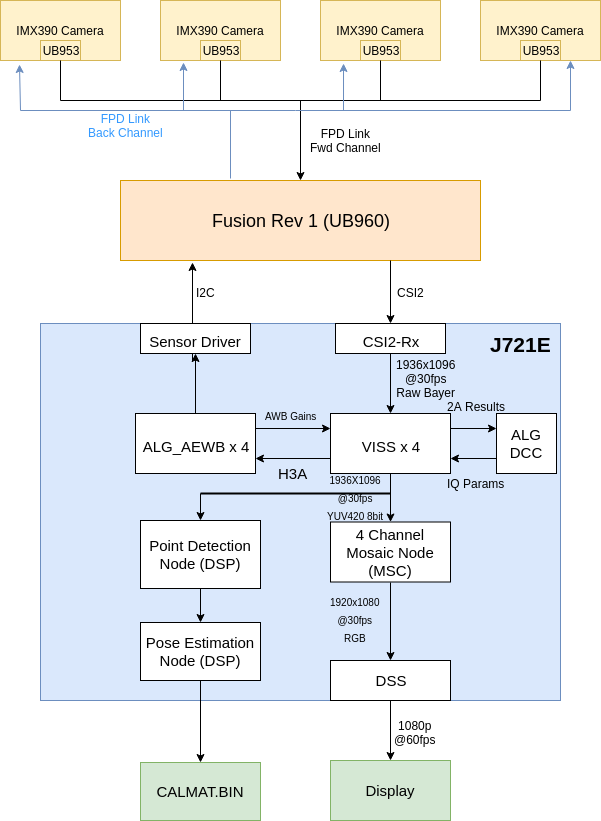
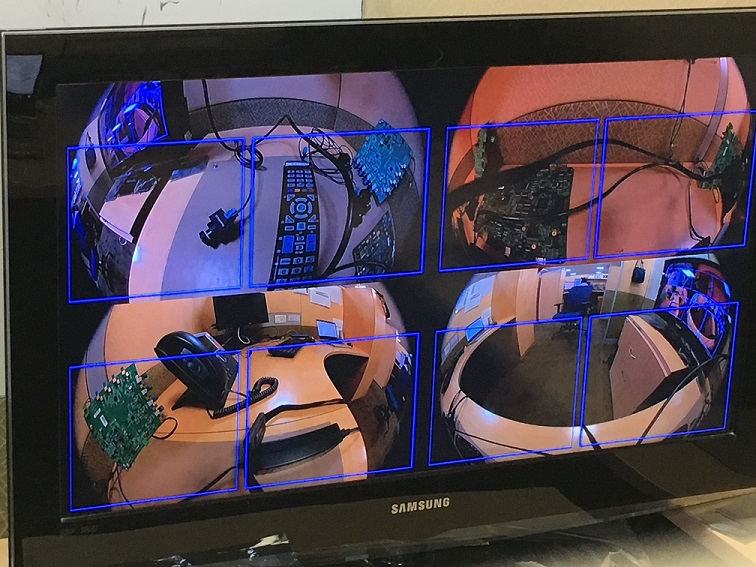

Introduction
This application allows users to generate the necessary calibration file (CALMAT.BIN) for running the 3D Surround View application. This application also allows users to capture raw and YUV images from the individual sensors.
Supported plaforms
| Platform | Linux x86_64 | Linux+RTOS mode | QNX+RTOS mode | SoC |
| Support | NO | YES | YES | J721e / J721S2 / J784S4 |
Data flow
The Surround View Calibration app contains multiple separate graphs. The first graph contains the mosaic visualization, capturing using the capture node, giving the raw output to the VISS and AEWB nodes to perform the image processing. The output of the VISS is then given to the mosaic node to perform a four channel mosaic of the input images. The output from the mosaic is dequeued from the first graph and the overlays are draw on the image before giving it to the second graph. The second graph contains only the display node. The final graph contains the SRV calibration nodes. The input to this graph comes from the VISS output from the second graph and contains the point detection and pose estimation nodes running on the DSP. The output from this graph is the CALMAT.BIN file used for calibrating SRV.

Steps to run the application on J7 EVM
- Build the application and related libraries as mentioned in Build Instructions
- Follow steps 1-3 as mentioned in Run Instructions
- Important note: be sure to extract all test data to SD card or else the demo won't run
- The input files come from "${VX_TEST_DATA_PATH}/test_data/psdkra/srv/srv_app/"
- In order to run this app, the LENS.BIN and CHARTPOS.BIN files must be present in this path. The default files are present in the release package. Otherwise, these files can be generated by using the manual calibration tool. The manual calibration tool can be found here.
- In Linux+RTOS or QNX+RTOS mode
- Setup requirements:
- Connect 4 D3-IMX390 (Version1-D3RCM) sensor boards on cam0-cam3 input port of the Fusion1 Platform, as shown in the above image. (Note: these are the only sensors that have been tested with the SRV demo). Please ensure that the power to the Fusion1 Platform is connected.
- The four cameras must be connected in the order front, right, back, left to cam0, cam1, cam2, cam3 respectively.
- The cameras such that each camera can view two black squares from the calibration chart seen here within the blue bounding boxes on the display. The calibration chart must be printed on a 36"x48" poster.
- Either an eDP display or HDMI display with infotainment daughter card must be connected to the EVM in order to visualize the Surround View output. Note: the display type is chosen via a build option as described in Step 3 of Run Instructions
- VX_TEST_DATA_PATH environment variable is set as part of vision_apps_init.sh
- Run the app as shown below on the J7 EVM target
cd /opt/vision_apps
source ./vision_apps_init.sh
./vx_app_srv_calibration.out
- After running this app, a four channel mosaic will be shown on the display. Additionally, overlay boxes will be seen in each quadrant. Finally, a menu of options will appear listing the various actions that can be taken.
- The first option is the run the calibration. In order for calibration to be successful, the calibration chart boxes for each camera fall within the bounding box region. After selecting option "a", the calibration will run and give a status of whether it is successful or not. If the calibration is successful, red boxes will appear on the locations of the detected corners of the calibration chart boxes. The image will then freeze to show exactly where on the chart that these corners were detected. If the red boxes do not line up to where the corners are on the chart, the graph can resume streaming by selecting "c". If the calibration is not successful, the console will indicate that it has failed and the video will continue to stream. Calibration can be re-run by adjusting the cameras accordingly and re-selecting "a".
- Option "b" allows the user to dump the VISS output images. These images will be dumped in the folder /opt/vision_apps/test_data/output/viss_output_*.yuv, based on the camera (front, back, left, right). These images can be used as input to the manual calibration tool.
- Option "c" allows calibration to be re-run in the case that the corners are not detected correctly, as mentioned above.
- Option "d" dumps the raw output from the camera in the location opt/vision_apps/test_data/output/capture_output_*.raw, based on the camera (front, back, left, right).
- After selecting option "a" to calibrate, the output calibration table will be dumped at the location "${VX_TEST_DATA_PATH}/test_data/psdkra/srv/srv_app/CALMAT.BIN". This file can be used to run the 3D Surround View Application demo.
Sample Output
Shown below is a sample image of the output of the Surround View Calibration application



 1.8.14
1.8.14